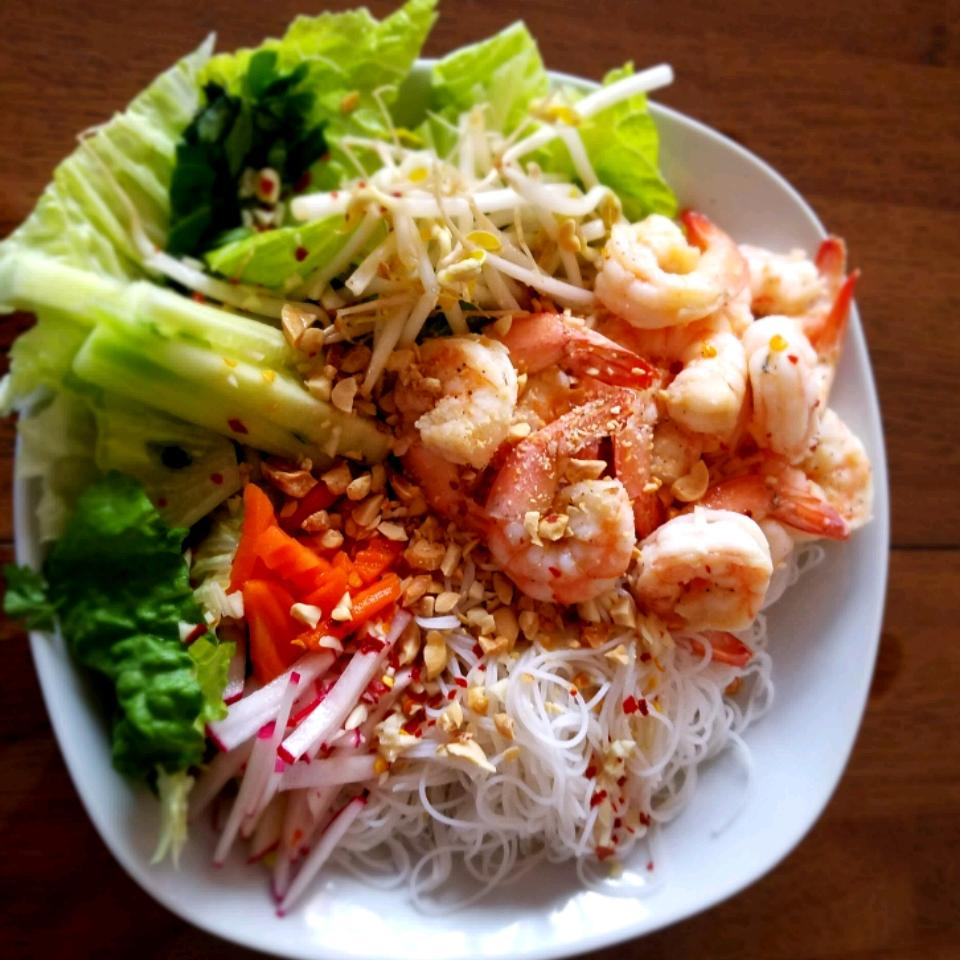

Vermicelli Noodle Bowl

From Vietnam with Love
Many Vietnamese dishes are perfect for hot weather. This simple noodle salad combines fresh herbs, rice vermicelli,
cucumber, bean sprouts, and more, topped with grilled shrimp.
Tossed with a tangy sweet and sour sauce, it's a simple and satisfying dinner.
Ingredients
- ¼ cup white vinegar
- ¼ cup fish sauce
- 2 tablespoons white sugar
- 2 tablespoons lime juice
- 1 clove garlic, minced
- ¼ teaspoon red pepper flakes
- ½teaspoon canola oil
- 2 tablespoons chopped shallots
- 2 skewers
- 8 medium shrimp, with shells
- 1 (8 ounce) package rice vermicelli noodles
- 1 cup finely chopped lettuce
- 1 cup bean sprouts
- 1 English cucumber, cut into 2-inch matchsticks
- ¼ cup finely chopped pickled carrots
- ¼ cup finely chopped diakon radish
- 3 tablespoons chopped cilantro
- 3 tablespoons finely chopped Thai basil
- 3 tablespoons chopped fresh mint
- ¼ cup crushed peanuts
Directions
- Whisk together in small bowl:
- vinegar
- fish sauce
- sugar
- lime juice
- garlic
- red pepper flakes
Set the sauce aside.
-
Heat vegetable oil a small skillet over medium heat.
- Add shallots.
- Cook and stir and softened and lightly caramelized, about 8 minutes.
-
Preheat an outdoor grill for medium heat and lightly oil the grate.
- Skewer 4 shrimp on each skewer and grill until they turn pink and are charred on the outside, 1 to 2 minutes per side.
- Set aside.
-
Bring a large pot of water to a boil.
- Add vermicelli noodles and cook until softened, 12 minutes.
- Drain noodles and rinse with cold water, stirring to separate the noodles.
-
Assemble the vermicelli bowl by placing the cooked noodles in one half of each serving bowl and the lettuce and bean sprouts in the other half.
- Top each bowl with
- cucumbers
- carrots
- daikon
- cilantro
- Thai basil
- mint
- peanuts
- the caramelized shallots
- Serve with shrimp skewers on top and sauce on the side.
- Pour sauce over the top and toss thoroughly to coat before eating.
Nutrition Facts
Per Serving: 659 calories; protein 26.2g; carbohydrates 112.3g; fat 12.8g; cholesterol 36.1mg; sodium 2565.2mg.